Sykehusbag og fødselsplan
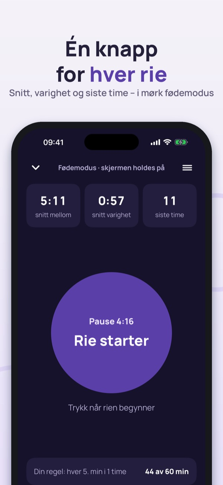
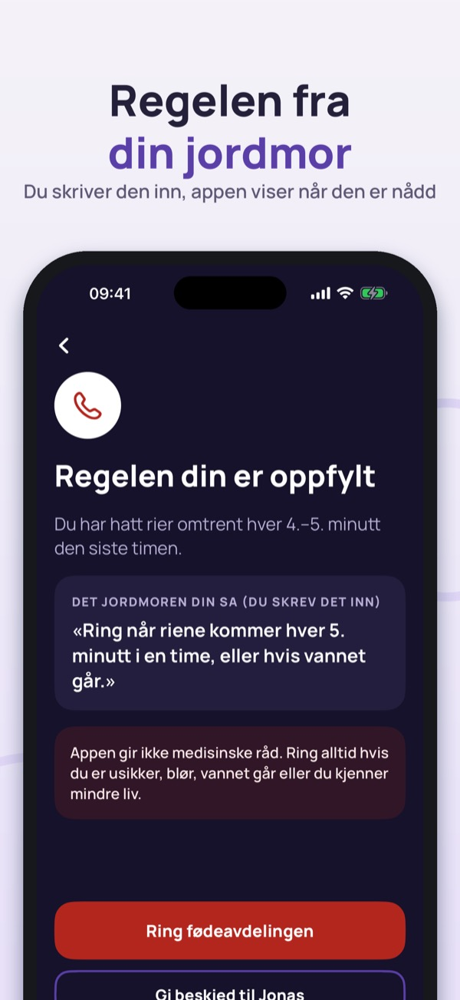
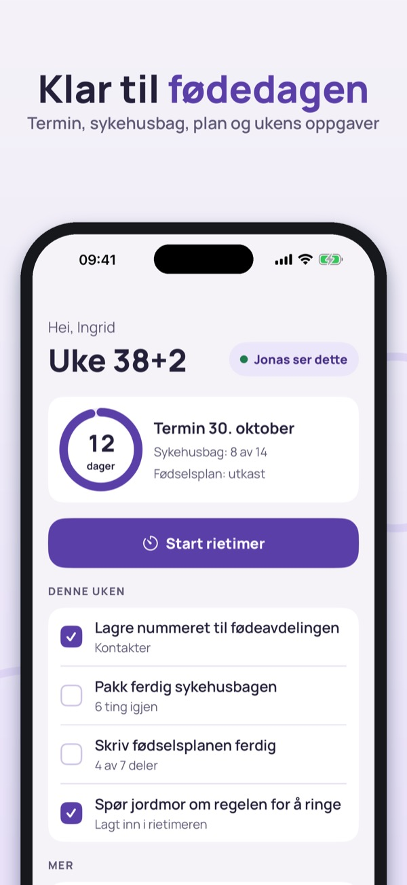
Fødselsklar samler det du trenger på fødedagen: en rietimer med én stor knapp, sykehusbagen, fødselsplanen og numrene du skal ringe – og partneren din kan se det samme.
Skriv inn det jordmoren eller fødeavdelingen sa, for eksempel «ring når riene kommer hver 5. minutt i en time». Appen viser hvor langt du har kommet og fremhever når tallene dine er nådd, sammen med en stor knapp for å ringe fødeavdelingen. Appen foreslår ingen tall selv og bestemmer ikke når du skal dra.
Del via iCloud, uten konto. Partneren ser status for riene, sykehusbagen, planen og kontaktene, med «sist oppdatert» så ingenting ser ferskere ut enn det er. Du velger selv hva som deles. Beskjeden «Riene har startet – kom hjem» sendes bare når du trykker.
Store knapper til fødeavdelingen, jordmor, partner og taxi. Numrene skriver du inn selv. Nødnummeret 113 ligger alltid nederst.
En enkel dagbok uten normalverdier. Øverst står alltid rådet om å kontakte fødeavdelingen hvis du kjenner mindre liv.
Offentlige steg etter fødselen i Norge, Danmark eller Finland, med lenke til kilden: hjemmebesøk, navn, foreldrepenger, barnetrygd og pass.
Rietimeren, historikken, sykehusbagen og kontaktene kan brukes uten kjøp – også på fødedagen. Deling med partner, PDF av fødselsplanen, bevegelsesdagboken, de første ukene og eksport av historikken låses opp med et engangskjøp. Ingen abonnement.
Fødselsklar fører logg og hjelper deg å huske. Appen gir ikke medisinske råd og stiller ingen diagnose. Følg rådene fra jordmor og fødeavdelingen, og ring dem hvis du er usikker. Tekstene er kontrollert mot helsenorge.no, sundhed.dk og terveyskylä.fi.
Personvern: det du skriver inn lagres på telefonen og, hvis du deler, i din egen iCloud. Anonym bruksstatistikk (hvilke skjermer som brukes, aldri helseopplysninger) kan slås av i innstillingene.
Bruksvilkår (EULA): https://www.apple.com/legal/internet-services/itunes/dev/stdeula/
Personvern: https://baytechbv.github.io/privacy/fodsel-nordic/
Hospitalstaske og fødeplan
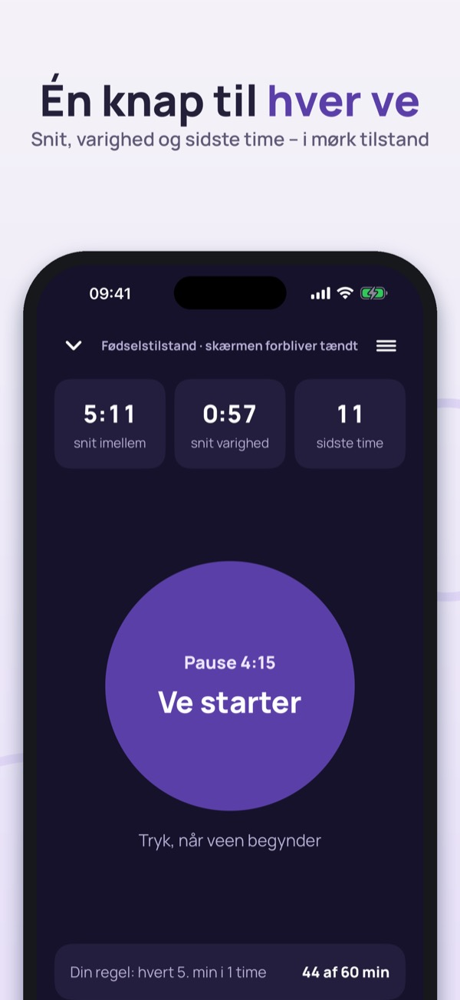
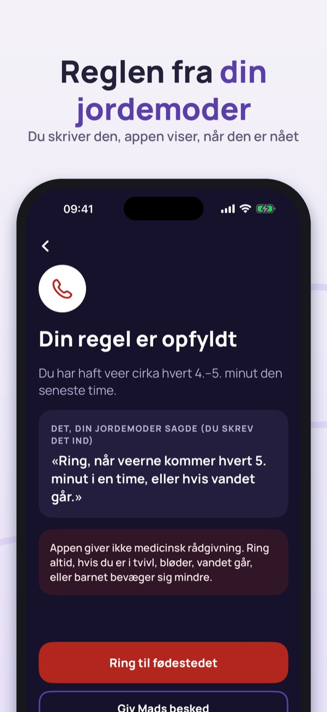
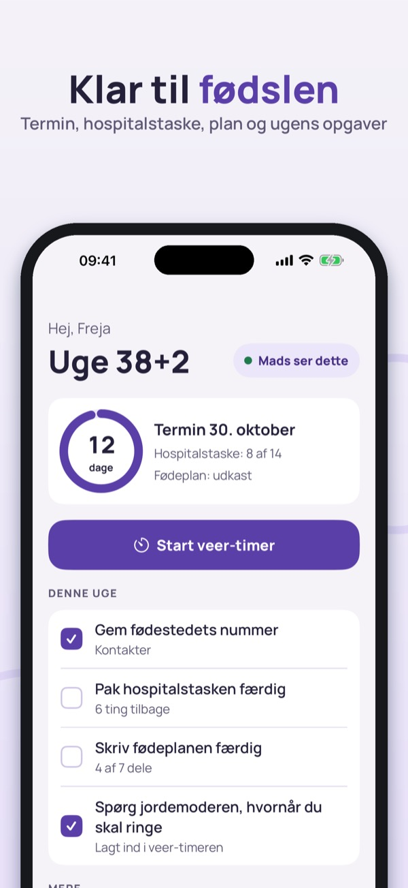
Fødselsklar samler det, du har brug for på fødselsdagen: en veer-timer med én stor knap, hospitalstasken, fødeplanen og de numre, du skal ringe til – og din partner kan se det samme.
Skriv det, jordemoderen eller fødestedet sagde, for eksempel »ring, når veerne kommer hvert 5. minut i en time«. Appen viser, hvor langt du er nået, og fremhæver, når dine tal er nået, sammen med en stor knap til at ringe til fødestedet. Appen foreslår ingen tal selv og bestemmer ikke, hvornår du skal af sted.
Del via iCloud, uden konto. Din partner ser status for veerne, hospitalstasken, planen og kontakterne, med »opdateret for … siden«, så intet ser nyere ud, end det er. Du vælger selv, hvad der deles. Beskeden »Veerne er gået i gang – kom hjem« sendes kun, når du trykker.
Store knapper til fødestedet, jordemoderen, din partner og taxa. Numrene skriver du selv. Alarmnummeret 112 står altid nederst.
En enkel dagbog uden normalværdier. Øverst står altid rådet om at ringe til fødestedet, hvis barnet bevæger sig mindre.
Offentlige trin efter fødslen i Danmark, Norge eller Finland, med link til kilden: omsorgserklæring, hælprøve, sundhedsplejerske, navngivning, barselsdagpenge og pas.
Veer-timeren, historikken, hospitalstasken og kontakterne kan bruges uden køb – også på fødselsdagen. Deling med partner, PDF af fødeplanen, bevægelsesdagbogen, de første uger og eksport af historikken låses op med et engangskøb. Intet abonnement.
Fødselsklar fører log og hjælper dig med at huske. Appen giver ikke medicinsk rådgivning og stiller ingen diagnose. Følg rådene fra jordemoderen og fødestedet, og ring til dem, hvis du er i tvivl. Teksterne er kontrolleret mod sundhed.dk, borger.dk, helsenorge.no og terveyskylä.fi.
Privatliv: det, du skriver, gemmes på telefonen og, hvis du deler, i din egen iCloud. Anonym brugsstatistik (hvilke skærme der bruges, aldrig helbredsoplysninger) kan slås fra i indstillingerne.
Vilkår (EULA): https://www.apple.com/legal/internet-services/itunes/dev/stdeula/
Privatliv: https://baytechbv.github.io/privacy/fodsel-nordic/
Ajastin ja sairaalakassi
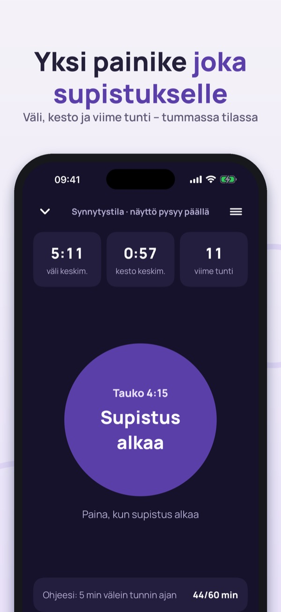
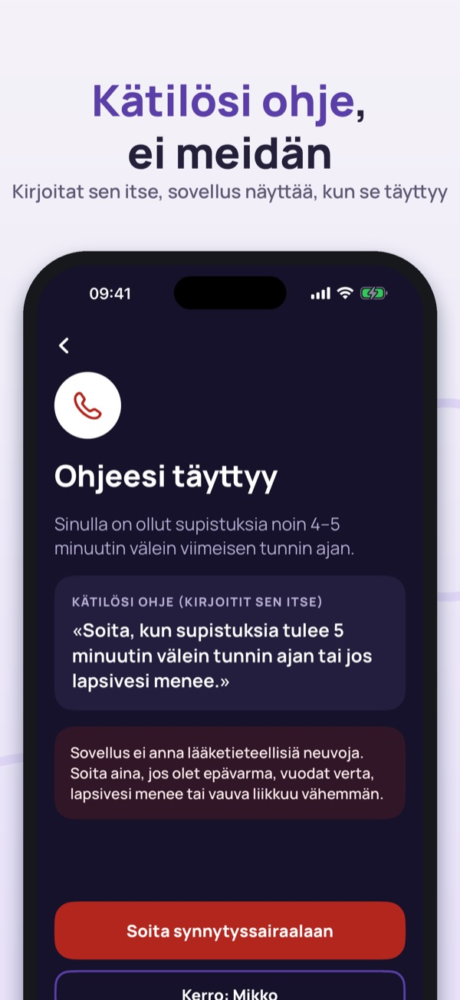
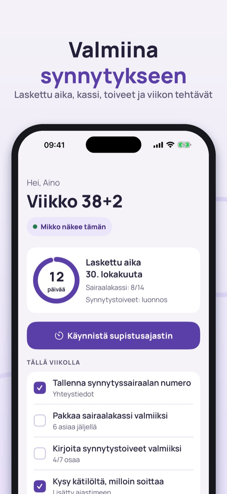
Synnytysvalmis kokoaa synnytyspäivän tärkeimmät asiat: supistusajastin yhdellä isolla painikkeella, sairaalakassi, synnytystoiveet ja numerot, joihin soitat – ja kumppanisi näkee saman.
Kirjoita, mitä kätilö tai synnytyssairaala sanoi, esimerkiksi ”soita, kun supistuksia tulee 5 minuutin välein tunnin ajan”. Sovellus näyttää, kuinka pitkällä olet, ja korostaa, kun omat lukusi täyttyvät, sekä näyttää ison painikkeen synnytyssairaalaan soittamiseen. Sovellus ei ehdota lukuja eikä päätä, milloin lähdet.
Jako iCloudin kautta, ilman tiliä. Kumppani näkee supistusten tilan, sairaalakassin, toiveet ja yhteystiedot sekä tiedon ”päivitetty … sitten”, joten mikään ei näytä tuoreemmalta kuin on. Valitset itse, mitä jaetaan. Viesti ”Supistukset ovat alkaneet – tule kotiin” lähtee vain, kun painat.
Isot painikkeet synnytyssairaalaan, neuvolaan, kumppanille ja taksiin. Kirjoitat numerot itse. Hätänumero 112 on aina alimpana.
Yksinkertainen päiväkirja ilman viitearvoja. Ylimpänä on aina neuvo ottaa yhteyttä synnytyssairaalaan, jos vauva ei liiku normaalisti.
Viralliset vaiheet synnytyksen jälkeen Suomessa, Norjassa tai Tanskassa lähdelinkkeineen: äitiysavustus, neuvola, nimen ilmoittaminen, vanhempainraha, lapsilisä ja passi.
Supistusajastinta, historiaa, sairaalakassia ja yhteystietoja voi käyttää ilman ostoa – myös synnytyspäivänä. Kumppanin kanssa jakaminen, synnytystoiveiden PDF, liikepäiväkirja, ensimmäiset viikot ja historian vienti avautuvat kertaostolla. Ei tilausta.
Synnytysvalmis kirjaa ja auttaa muistamaan. Sovellus ei anna lääketieteellisiä neuvoja eikä tee diagnooseja. Noudata kätilön ja synnytyssairaalan ohjeita ja soita heille, jos olet epävarma. Tekstit on tarkistettu terveyskylä.fi:n, kela.fi:n, helsenorge.no:n ja sundhed.dk:n tiedoista.
Tietosuoja: kirjoittamasi tiedot tallentuvat puhelimeen ja, jos jaat, omaan iCloudiisi. Nimettömät käyttötilastot (mitä näyttöjä käytetään, ei koskaan terveystietoja) voi kytkeä pois asetuksista.
Käyttöehdot (EULA): https://www.apple.com/legal/internet-services/itunes/dev/stdeula/
Tietosuoja: https://baytechbv.github.io/privacy/fodsel-nordic/
Contractions, bag & birth plan
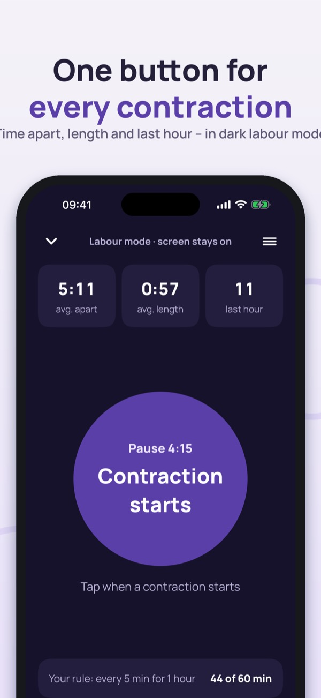
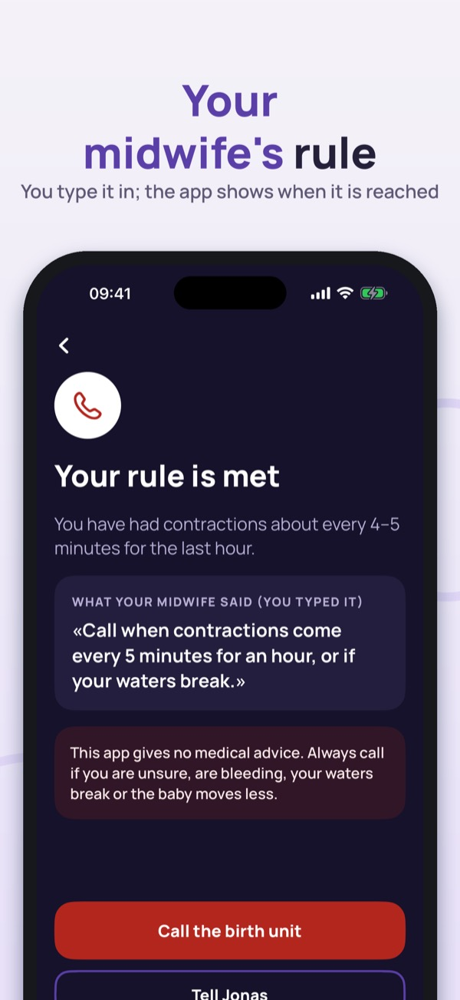
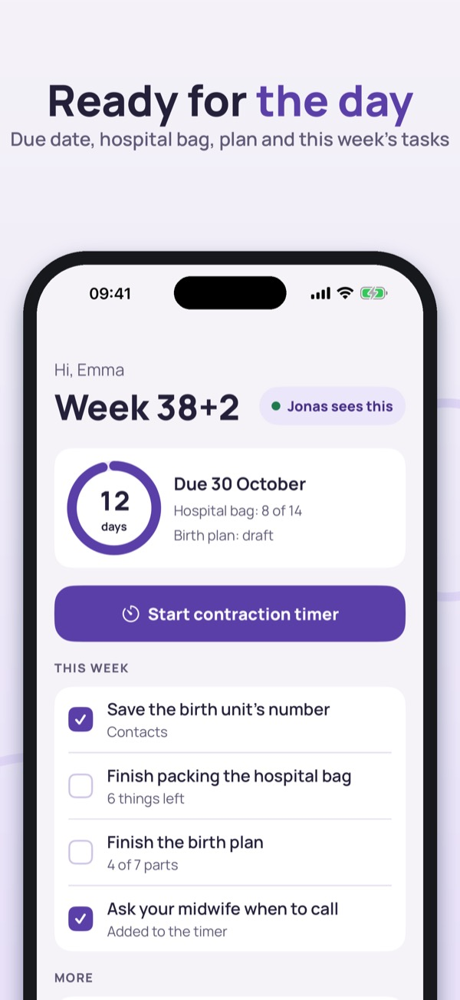
Fødselsklar brings together what you need on the day: a contraction timer with one big button, the hospital bag, your birth plan and the numbers to call – and your partner can see the same. In Norwegian, Danish, Finnish and English, for Norway, Denmark and Finland.
Type what your midwife or birth unit told you, e.g. "call when contractions come every 5 minutes for an hour". The app shows how far along you are and highlights when your own numbers are reached, together with a big button to call the birth unit. The app suggests no numbers of its own and does not decide when you should go.
Share through iCloud, no account. Your partner sees the contraction status, the bag, the plan and the contacts, with "updated … ago" so nothing looks fresher than it is. You choose what is shared. The message "Contractions have started – please come home" is only sent when you tap.
Big buttons for the birth unit, midwife, partner and taxi. You type the numbers yourself. The emergency number is always at the bottom.
A simple diary without "normal" values. The advice to contact your birth unit if the baby moves less is always at the top.
Official steps after the birth in Norway, Denmark or Finland, each with a link to the source: home visits, registering the name, parental and child benefits, passport.
The contraction timer, history, hospital bag and contacts work without a purchase – on the day too. Partner sharing, the birth-plan PDF, the movement diary, the first weeks and history export unlock with a one-time purchase. No subscription.
Fødselsklar keeps a log and helps you remember. It gives no medical advice and makes no diagnosis. Follow the advice of your midwife and birth unit, and call them if you are unsure. Texts are checked against helsenorge.no, sundhed.dk and terveyskylä.fi.
Privacy: what you enter stays on your phone and, if you share, in your own iCloud. Anonymous usage statistics (which screens are used, never health information) can be switched off in Settings.
Terms of Use (EULA): https://www.apple.com/legal/internet-services/itunes/dev/stdeula/
Privacy: https://baytechbv.github.io/privacy/fodsel-nordic/